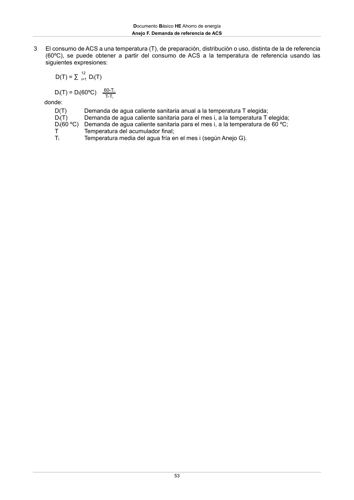

DB-HE Ahorro de energía · edición 2022-06-14 · capa oficial
Documento DB-HE-oficial · SHA-256 del PDF 7f890bd495552e979f83f72c5f5c7b642e745911a8e343a7b5b73023ce0e1f05
Página física 53 de 56.
Copia fiel del PDF fuente · Fuente oficial
Ficha de la disposición en la fuente oficial
Formato: Texto de la página (Markdown)
Documento Básico HE Ahorro de energía Anejo F. Demanda de referencia de ACS 53 3 El consumo de ACS a una temperatura (T), de preparación, distribución o uso, distinta de la de referencia (60ºC), se puede obtener a partir del consumo de ACS a la temperatura de referencia usando las siguientes expresiones: D(T) = ∑ 12 Di(T) i=1 Di(T) = Di(60ºC) 60-Ti T-Ti donde: D(T) Demanda de agua caliente sanitaria anual a la temperatura T elegida; Di(T) Demanda de agua caliente sanitaria para el mes i, a la temperatura T elegida; Di(60 ºC) Demanda de agua caliente sanitaria para el mes i, a la temperatura de 60 ºC; T Temperatura del acumulador final; Ti Temperatura media del agua fría en el mes i (según Anejo G).
